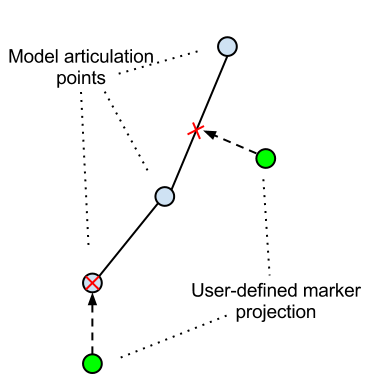
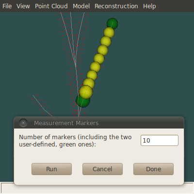
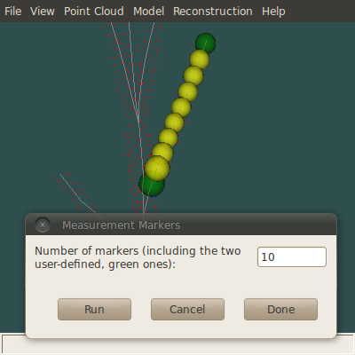

Measurement Markers¶
This is a tool to generate measurement markers (i.e. spheres with a position and radius) at evenly spaced interpolated intervals on a model subsegment (e.g. a branch).
When a model is available on screen, clicking Model->Add Measurement Markers does three things:
- Open an interaction dialog to specify the desired number n of markers
- Spawn two user-defined green marker spheres at the ends of an arbitrary subsegment of the model
- Set model visualization to wireframe (i.e. disable volume) to allow an easier interaction with the marker spheres
The two green markers can be freely moved (by first selecting them with s while the cursor is over) to define a subsegment on which the remaining n-2 markers will be placed (at evenly spaced intervals, using interpolation). Whenever a green marker is moved, it snaps on the model as its new position is projected on the nearest point of the nearest linear segment:
When the green markers are at the desired positions, you can launch the interpolation process to generate the remaining markers (as many times as needed, with different n values):
 

The process will generate an error if the two green markers do not form a valid subsegment, i.e. if one is not found in the other’s downward path toward the root.
When satisfied with the results, press the dialog’s Done button to “commit” the markers (Cancel will remove all markers from the current run). You can further modify the position and size of the markers, using the usual mouse interaction for spheres. You can then save their 3d position and radius in a CSV file, using File->Save Markers. You can also reload them at a later time using File->Open. Finally, Model->Clear Measurement Markers will remove all markers present on screen.